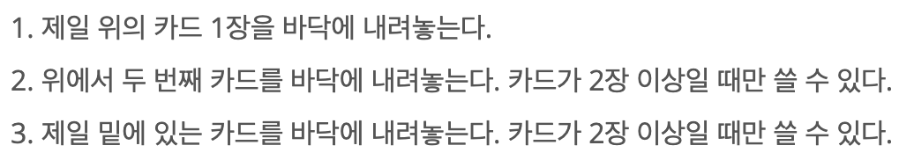

INFO
난이도 : SILVER3
문제유형 : DataStructure Deque
https://www.acmicpc.net/problem/18115
SOLVE
앞 뒤가 모두 뚫려있는 Deque 자료구조를 사용해 문제를 풀이했다.
예제 입력2를 예시로 문제에서 제시해주는 값을 정리해보면 다음과 같다.
초기 상태 : 알 수 없음
기술 사용 순서 : 2 3 3 2 1
최종 상태 : 5 4 3 2 1
즉, 기술을 거꾸로 사용하며 반대로 적용시키면 초기 상태를 구할 수 있다.

n개의 명령을 저장할 n크기의 cmd 벡터를 정의한 뒤 명령을 입력받는다.
int n;
cin >> n;
vector<int> cmd(n);
for(int i = 0; i < n; i++) {
cin >> cmd[i];
}
명령을 뒤에서부터 반대로 적용시킨다.
// 기술을 거꾸로 사용 & 거꾸로 적용
int card = 1;
deque<int> dq;
for (int i = n - 1; i >= 0; i--) {
// skill 1 : 맨 뒤에 원소를 추가
if (cmd[i] == 1) {
dq.push_back(card);
}
else if (cmd[i] == 2) {
int tmp_cmd = dq.back();
dq.pop_back();
dq.push_back(card);
dq.push_back(tmp_cmd);
}
else if (cmd[i] == 3) {
dq.push_front(card);
}
card++;
}
카드를 덱에서 위에서부터 출력한다.
// 초기 카드 상태를 위에서 부터 출력
while(!dq.empty()) {
cout << dq.back() << " ";
dq.pop_back();
}CODE
#include <iostream>
#include <vector>
#include <deque>
using namespace std;
int main() {
ios_base::sync_with_stdio(0);
cin.tie(0); cout.tie(0);
int n;
cin >> n;
vector<int> cmd(n);
for(int i = 0; i < n; i++) {
cin >> cmd[i];
}
// 기술을 거꾸로 사용 & 거꾸로 적용
int card = 1;
deque<int> dq;
for (int i = n - 1; i >= 0; i--) {
// skill 1 : 맨 뒤에 원소를 추가
if (cmd[i] == 1) {
dq.push_back(card);
}
else if (cmd[i] == 2) {
int tmp_cmd = dq.back();
dq.pop_back();
dq.push_back(card);
dq.push_back(tmp_cmd);
}
else if (cmd[i] == 3) {
dq.push_front(card);
}
card++;
}
// 초기 카드 상태를 위에서 부터 출력
while(!dq.empty()) {
cout << dq.back() << " ";
dq.pop_back();
}
}
// 기술 목록
// 1. 제일 위의 카드 1장을 바닥에둔다.
// 2. 위에서 2번째 카드를 바닥에 둔다. (2장 이상인 경우만 가능)
// 3. 제일 밑에 있는 카드를 바닥에 둔다. (2장 이상일때만 가능)
// 카드 N장이 있다.
// 1~n까지의 정수가 중복되지 않게 있다.
// 기수을 n번 사용해서 카드를 다 내려놓았을 때, 위에서부터 1.2...n이 적혀있었다.
// 2 ... 1 2 3
// 3 ...
// 기술 1번 사용 -> 맨뒤에 원소를 넣어준다.
// 기술 2번 사용 -> 맨뒤에서 2번째에 원소를 넣어준다.
// 기술 3번 사용 -> 원소를 맨 앞에 넣어준다.